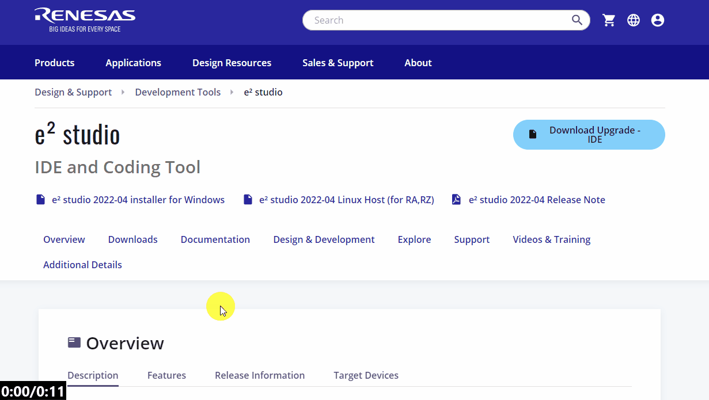

Here I will install to a new location - this is personal preference of having seperate installations of toolchain variants.


Here we will guide you through downloading and installing e2studio for anyone wishing to develop with the Renesas RL78.
Go to the e2studio landing page and download the latest release.
To do this, navigate to the Downloads section and select the latest windows installer for e2studio.
You will be prompted to login to your My Renesas account - please do so.

Once installed, unzip and launch the installer (this usually works best with admin rights when using a workplace computer).
The installer may take a minute to extract the contents, so please be patient!
If you have multiple installation you will be presented with the option to install or upgrade.
Here I will install to a new location - this is personal preference of having seperate installations of toolchain variants.
I also like to use a non-default install location.
To change the default click [Change...] and browse to the desired location.

There are some non-default components which are very useful to install.
We will go through a somewhat extended custom installation to ensure moving forward you are prepared to start developing with all Renesas tools.